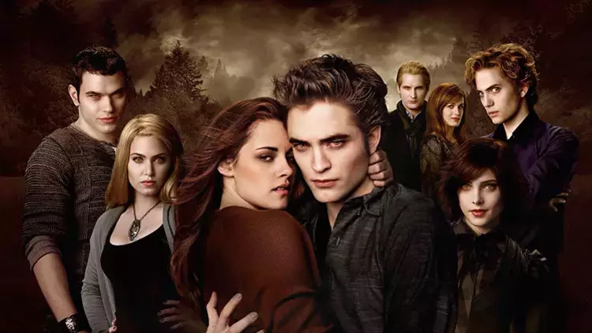

Ben Merve Dürül İstanbulda yaşamaktayım. Yürüyüş yapmayı ve denizi izlemeyi çok seviyorum.
Alacakaranlık (İngilizce özgün adıyla Twilight), Stephenie Meyer'in 2005'te yazdığı aynı adlı romanından uyarlanan 2008 yapımı Amerikan filmi. Catherine Hardwicke'in yönettiği filmin başrollerinde Kristen Stewart (Bella Swan) ve Robert Pattinson (Edward Cullen) yer alır.
